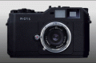

器材库 > APS及其以下画幅可换镜头数码相机 > R-D1s

规格总览
产品类型
APS画幅可换镜头数码相机
发布日期
2006-03-31
停产
是
影像规格
影像传感器
CCD
影像传感器尺寸
23.7 × 15.6mm
总像素
610万
有效像素
610万
影像处理器
EPSON Digital image ARTist
色彩空间
Adobe RGB
最大解像度
3008 x 2000
静态图像尺寸
CCD-RAW(12 bit)：3008 × 2000；JPEG：3008 × 2000, 2240 × 1488
静态图像格式
JPEG, RAW, RAW+JPEG
画幅比
3:2
镜头和对焦
镜头卡口
Leica M, EM
兼容镜头
通过适配器可使用L卡口镜头（等效35mm画幅系数1.53x）
对焦模式
手动对焦：运动测距叠影对焦（RangeFinder）
手动对焦
支持
曝光控制
测光系统
TTL中央重点加权平均测光
测光模式
中央重点测光
测光范围
1EV~19EV
曝光模式
A（光圈优先自动曝光）, M（手动测光曝光）
快门类型
电子控制，纵走式，焦平面快门
快门速度
1/2000 - 1秒，B门；闪光同步速度：1/125秒
曝光补偿
±2EV以1/3EV级调整
自动曝光锁
有
ISO感光度
200, 400, 800, 1600
白平衡
日光, 白炽灯, 阴天, 阴影, 自动, 日光灯, 预设白平衡
闪光灯
闪光同步模式
前帘同步
取景器/显示屏
取景器
叠影式实象取景器
取景范围
85%
取景放大倍率
1倍
取景器信息
LED 快门速度显示
LCD类型
彩色TFT LCD
LCD尺寸
2.0英寸
LCD像素
23.5万
视野率
99.7%
亮度调节级数
8级
文件输入/输出
存储卡
SD/SDHC
支持打印协议
DPOF
电源
电池
一块Epson锂电子可充电电池，含充电器
机身规格
材质
金属
颜色
黑色
尺寸
142.0 x 88.5 x 39.5mm
重量
590g
其它
配件端口
热靴, 快门线
支持语言
中文（繁体）, 英语, 日语, 荷兰语, 法语, 德语, 西班牙语
工作温度
5-35℃
工作湿度
30-80%
附件
电池充电器、相机背带、使用手册、电源线、机身盖、 Photolier Ver.1.2.1和插件RAW Plug-In Ver.1.21
软件
Photolier Ver.1.2.1和插件RAW Plug-In Ver.1.21
该产品暂无存档的网友点评
产品图 / 样片
R-D1s